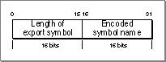

Legacy Document
Important: The information in this document is obsolete and should not be used for new development.
Important: The information in this document is obsolete and should not be used for new development.


Exported Symbols
All exported symbols in a PEF container are stored in a hashed form, allowing the Code Fragment Manager to search for them efficiently when preparing a fragment. Hashing is a method of processing and organizing symbols so they can be searched for quickly.PEF uses a modified version of the traditional hash table. The traditional model is shown in Figure 8-21.
Figure 8-21 A traditional hash table
A hash word is computed for every symbol and a hash index value is computed for every hash word. The hash words are grouped together in hash chains according to their index values, and each chain corresponds to an entry in the hash table.
The PEF implementation, as shown in Figure 8-22, effectively flattens the traditional hash table. Functionally the hash tables in Figure 8-21 and Figure 8-22 are identical.
Figure 8-22 Flattened hash table implementation
Each hash chain is stored consecutively in the export key table and the exported symbol table. For each hash index value, the hash table stores the number of entries in its chain and the starting table index value for that chain.
The general procedure for creating a hashed data structure is as follows:
The Code Fragment Manager can search for exported symbols by name or by table index number. When searching for a symbol by (zero-based) table index number, the Code Fragment Manager looks up the index value in the exported symbol table to obtain a pointer to the name of the symbol. Then it uses the same index to get the hash word value of the symbol in the export key table. (The length of the name is encoded in the hash word.)
- Compute the number of hash index values. This value is based on the number of exported symbols in the container. See "The Exported Symbol Count to Hash Table Size Function" (page 8-42) for a suggested method of calculating this value.
- Compute the hash word value and hash index value for every exported symbol. (The hash index value is dependent on both the symbol and the size of the hash table.) See "The Name to Hash Word Function" (page 8-41) and "The Hash Word to Hash Index Function" (page 8-42) for details of the required calculations.
- Sort the exported symbols by hash index value. This procedure effectively indexes the exported symbols. Each symbol has a table index value that references its hash word in the export key table and an entry in the exported symbol table.
- Construct the hash table using the size determined in step 1. Each hash table entry contains a chain count indicating the number of exported symbols in the chain (that is, the number that have this hash index value) and the offset in the export key and symbol tables to the first symbol in the chain.
Searching for exported symbols by name is somewhat more complicated. The Code Fragment Manager first computes the hash word of the symbol it is trying to locate. Then it computes a hash index value from the hash word and the size of the hash table. Using this value as an index into the hash table, the Code Fragment Manager obtains a chain count value and a table index value for the first entry in the hash chain (as determined in step 4). Then, beginning at the table index value, it searches the export key table for a hash word to match the one it previously calculated. If the Code Fragment Manager finds a match, it uses the matching table index value to look up the name in the symbol table. If the symbol names match, the Code Fragment Manager returns information about the symbol. If the Code Fragment Manager cannot find a match after searching the number of entries equivalent to the chain count value, it marks the symbol as not found.
The sections that follow describe the elements of the hashed data structure in more detail.
The Export Hash Table
The number of entries in the hash table is 2 raised to the value in theexportHashTablePowerfield of the loader header (page 8-18). The number of entries is determined from the number of exported symbols. If there are no exports, the table still contains one entry. See "Hashing Functions" (page 8-41) for details of the hashing process and the suggested method for computing the number of hash table entries.A hash table entry is of fixed size (4 bytes) and has the form shown in Figure 8-23.
Figure 8-23 A hash table entry
The field values are as follows:
- The first field (14 bits) contains the number of items in this chain.
- The second field (18 bits) contains the table index value of the first symbol in the chain (see Figure 8-22 (page 8-37)).
The Export Key Table
The export key table contains a key (a hash word) for every exported symbol. The structure of a hash word is fixed (4 bytes) and has the form shown in Figure 8-24.
For more information about calculating the hash word, see "The Name to Hash Word Function" (page 8-41).
- The first field contains the length of the export symbol name in bytes.
- The second field contains the name of the symbol encoded using a hash key.
The Exported Symbol Table
The exported symbol table contains an entry for every symbol exported by the fragment. All exports with a given hash index value are grouped together in the symbol table (see Figure 8-22 (page 8-37)).An exported symbol table entry data structure is of fixed size (10 bytes) and has the form shown in Listing 8-7.
Listing 8-7 Exported symbol table entry data structure
struct PEFExportedSymbol { UInt32classAndName; UInt32symbolValue; SInt16sectionIndex; };The fields in the entry are as follows:
- Note
- Each entry is 10 bytes long. No padding bytes are used between successive entries.

The
- The
classAndNamefield (4 bytes) contains two entries:
- The first byte designates the symbol class of the exported symbol. See Table 8-3 (page 8-21) for a listing of classes. Flag bits for exported symbols are reserved for future use.
- The following 3 bytes designate the offset from the beginning of the loader string table to the name of the symbol. The name of the symbol is not null terminated, but you can determine the length of the string from the upper 2 bytes of the symbol's hash word (found in the export key table).
- The
symbolValuefield (4 bytes) typically indicates the offset from the beginning of the symbol's section to the exported symbol.- The
sectionIndexfield (2 bytes) indicates the number of the section that contains this symbol. Note that this is a signed field.
symbolValuefield has special meaning when the section number is negative. If the section number is-2, thesymbolValuefield contains an absolute address. If the section number is-3, thesymbolValuefield contains an imported symbol index, indicating that the imported symbol is being reexported.Hashing Functions
This section describes hashing algorithms used to create the hashed data structure for exported symbols.The Name to Hash Word Function
The hash word function computes a 32-bit hash word for a symbol name. The upper 16 bits contains the length of the name, and the symbol name is encoded using a hash key in the lower 16 bits. You are required to use this algorithm to calculate the hash word. Listing 8-8 shows a C implementation of the hash word function.Listing 8-8 Hash word function
/* Computes a hash word for a given string. nameText points to the */ /* first character of the string (not the Pascal length byte). The */ /* string may be null terminated. */ enum { kPEFHashLengthShift= 16, kPEFHashValueMask = 0x0000FFFF }; UInt32 PEFComputeHashWord (BytePtr nameText, UInt32 nameLength) { BytePtrcharPtr = nameText; SInt32hashValue= 0; UInt32length = 0; UInt32limit; UInt32result; UInt8 currChar; #define PseudoRotate(x) ( ( (x) << 1 ) - ( (x) >> 16 )) for (limit = nameLength; limit > 0; limit -= 1) { currChar = *charPtr++; if (currChar == NULL) break; length += 1; hashValue = PseudoRotate (hashValue) ^ currChar; } result = (length << kPEFHashLengthShift) | ((UInt16) ((hashValue ^ (hashValue >> 16)) & kPEFHashValueMask)); return result; } /* PEFComputeHashWord () */The Hash Word to Hash Index Function
The hash index (or hash slot number) function converts the 32-bit hash word value into a small index number.You are required to use this algorithm for calculating the index number. Listing 8-9 shows the hash word to hash index function.Listing 8-9 Hash word to hash index function
#define PEFHashTableIndex(fullHashWord,hashTablePower) \ ( ( (fullHashWord) ^ ((fullHashWord) >> (hashTablePower)) ) & \ ((1 << (hashTablePower)) - 1) )The Exported Symbol Count to Hash Table Size Function
Listing 8-10 shows a suggested method of calculating the hash table size. (This algorithm provides a good tradeoff between minimizing search time and minimizing table size, but you may substitute a similar algorithm.) The hash table size function computes the size of the hash table based on the number of exported symbols in the PEF container. The number of hash table entries is always a power of 2. The function in Listing 8-10 returns the value of the exponent. The value kExponentLimit can be arbitrary, but it must not exceed 30. The constantkAverageChainLimitis normally set to10, but you can adjust this to make a trade off between the size of the chain and search time.Listing 8-10 Exported symbol count to hash table size function
UInt8 PEFComputeHashTableExponent (SInt32 exportCount) { SInt32exponent; const SInt32kExponentLimit = 16; const SInt32kAverageChainLimit= 10; for (exponent = 0; exponent < kExponentLimit; exponent += 1) { if ((exportCount / (1 << exponent)) < kAverageChainLimit) break; } return exponent; } /* PEFComputeHashTableExponent () */